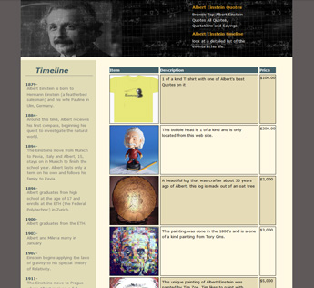
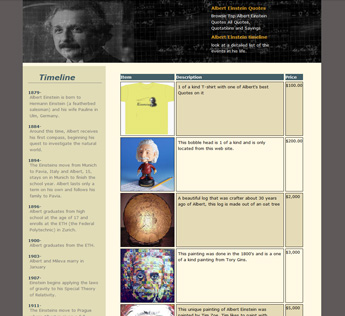

Albert Einstein An Informational Dreamweaver Studies.
Researched and built HTML Information website using Dreamweaver shortcuts, Dreamweaver's platform had many different shortcuts in which to write my code faster and more efficient where compaired to other plateforms finding shortcuts can be very time consuming and confusing.View Site
 STAGING AREA
STAGING AREA

Project: Albert Einstein Staging Area used for clients to check work.
Before creating the actual Informational site I created a staging area where I could post and update information. The theme of the staging area could be anything I wanted so I decided to go with the school spirit and make a Seattle Central Community College bulletin board theme. View Staging Area
COLOR SCHEME
Project: Albert Einstein Color Scheme used to liven up site.
For Albert Einstein's Color Scheme I went with a darker palette for a clean informational look and feel. Although some objects change while you hover over them due to widget assignments, the colors don't stray from the origonal color scheme.
SPRY WIDGETS
Project: Albert Einstein Dreamweaver Spry Widget Studies.
I create a page that had Spry Widgets on a few items that would change on hover. On Albert Einstein's informational page I created a timeline of items and events that happened in Albert's life, When you hover over the section of the timeline the background and dates colors change due to Spry Widgets in Dreamweaver.
VISUAL DESIGN
 

Project: Albert Einstein Visual Look And Feel.
The dark palette with the black and white images blend together it creates a clean look and easy navigation. Through-out the website tables, timelines and informational sections are all easy to read and have widget tricks that I have learned. View Site